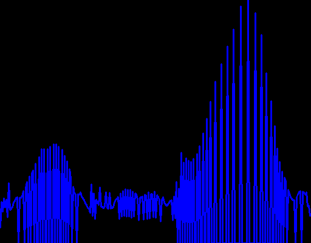

Histogramas e Thresholding
Este relatório documenta o procedimento de estudo teorico e pratico da utilizacao de histogramas e thresholding para processamento de imagens utilizando a biblioteca openCV e linguagem c++. Parte-se do pressuposto que relatorios anteriores foram estudados e ambiente de programacao esta configurado.
O procedimento de criacao de um histograma a partir de uma imagem se baseia em categorizar cada pixel da imagem em um Bin (ou categoria) de um Histograma baseado em sua intensidade, podendo ser em escala de cinza ou em cada um de seus canais de cor. O procedimento de Thresholding se baseia em aplicar uma funcao degrau (ou suas similares e variacoes) a cada pixel de uma imagem, com o objetivo de manter ou remover elementos para dar enfase a atributos desejados.
Exemplos de tutoriais fornecidos pelo roteiro de atividade pratica foram seguidos e estudados, de forma que codigos fornecidos por eles foram utilizados como a base para o desenvolvimento de items subsequentes. Artigos podem ser acessados atraves dos links abaixo, que foram replicados do roteiro.
Especificacoes do programa:
Para realizacao desta tarefa vamos nos basear nos codigos fornecidos pelos exemplos 2 e 1, nesta ordem.
O exemplo 2 fornece uma base para leitura de imagens e visualizacao de histogramas por canal. Nesta etapa de adaptacao,
a imagem sera convertida em escala de cinza e sera mantido apenas um canal singular, assim sera possivel visualizar a imagem em escala de cinza e seu histograma.
O exemplo 1 fornece o modo de utilizacao da funcao de equalizacao da imagem, nos permitindo assim obter a imagem equalizada, e repetir o procedimento anterior para obter seu histograma.
Imagem Original
Imagem Equalizada
Histograma original
Histograma Equalizado
Foi possível reproduzir vídeos e extrair informações como FPS e número de quadros.
O vídeo capturado foi salvo no formato .avi, com qualidade satisfatória e sincronização estável entre captura e gravação.
O processamento ocorreu sem perdas visuais perceptíveis, demonstrando que o OpenCV trata sequências de imagens de forma eficiente.
O cv2.VideoCapture é versátil, podendo receber dados de diferentes fontes (arquivo, câmera, RTMP, sequência de imagens).
O desempenho depende fortemente do frame rate e do tempo de espera configurado em cv2.waitKey().
O cv2.VideoWriter requer que a taxa de quadros e o tamanho dos quadros sejam compatíveis com a fonte de entrada.
O uso de formatos padronizados (ex.: MJPG) e caminhos corretos de escrita evitou erros relacionados a codecs e permissões.
O experimento permitiu compreender de forma prática os fundamentos da captura, exibição e gravação de imagens e vídeos com OpenCV.
A importância de verificar o retorno (ret) das funções
de captura para evitar falhas silenciosas.
A necessidade de liberar recursos (release()) ao final
da execução para evitar travamentos.
A diferença entre fluxos locais e remotos, principalmente quanto à latência e estabilidade.
O papel do cv2.VideoWriter na gravação e a influência
dos parâmetros de codec e FPS na qualidade final.
De modo geral, os programas desenvolvidos podem servir como base para futuras aplicações de visão computacional, como: